3 Managing Data and Forwarders
1 Getting Data into Splunk
- Understanding Splunk inputs
- Uploading data into Splunk
- Working with sourcetypes
- Understanding the phases of indexing
- Index-time vs. search-time precedence
1-1 Understanding Splunk Inputs
Splunk Enterprise Data Administrator Tasks
- Create and manage inputs for universal/heavy forwarders
- Manage parsing of data including line-breaking and timestamp extraction
- Design and establish new ingestion pipelines
- Manage Splunk configuration files deployment
- Collaborate with users on data on-boarding
Splunk Enterprise Systems Administrator Tasks
- Install Splunk Software
- Create and Manage Indexes
- Manage Splunk Licenses
- Configure Security
- Monitor Splunk and respond to Monitoring Console Alerts
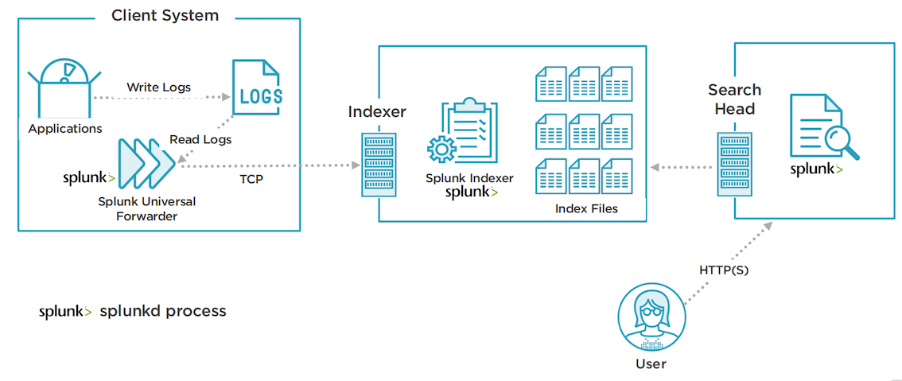
On the left side, we have the client systems.
- This could be applications, network devices or operating systems. They generate logs and other metrics.
- The Splunk universal forwarder, being the most common way of collecting data in Splunk, reads data from the log files and then sends them to the indexers using TCP.
- The data can be encrypted optionally.
The indexer receives data, parses them, and stores them in index files.
The search head is the entry point for the user. He uses a search head to log onto Splunk via a web interface and then uses a specialized query language, Search Processing Language, to query the data.
Ingest Any Text Data from Anywhere
- Authentication
- Audit
- Middleware
- OS
- OS Performance
- Network device
- Network packets
- Web Server
- Sensors
- IoT Devices
- Database
- Messaging Systems
- CI/CD
- Automation
- programs
- Mail Server
- LDAP Server
- Active Directory
- Containers
- Kubernetes/Contain
- er Orchestration
- Applications
- API
- Event viewer
- Mobile devices
- Call Detail record
Data Inputs
- A data source configured to send data to Splunk
- Data inputs send data to Splunk Indexers where the data is parsed and indexed
- During indexing, stream of data from the input is transformed to searchable events
Indexing Flow
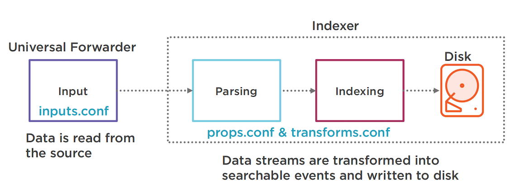
-
The universal forwarder is the data input.
- It uses
inputs.confas the primary configuration file to determine the behavior of the inputs. - Data is collected from the source.
- In most cases, these are the log files on the client systems.
- It uses
-
The data is then sent to the indexer.
- That's where the parsing happens.
- During parsing and indexing, props.conf and transforms.conf, two important configuration files, are utilized by Splunk.
-
Finally, the data is written to the disk.
- The data streams that originate at the input are simply transformed into searchable events and written to disk on the indexers.
Types of Data Inputs
- Files and folders： Monitor text files
- TCP/UDP： Receive data on a TCP/UDP port Files and folders
- HTTP： Receive data on a HTTP listener
- Scripted input： Ingest output of a script
- Windows input： Windows event logs and perfmon data
- Add-ons： Custom apps from Splunkbase
- Splunk Web： Upload data directly from browser
- CLI： Command line interface
- Modular inputs： Custom input by extending Splunk
- FIFO： First in First out Queues
Input Phase
Data is read from the source
- Data is handled as streams
- Configuration settings are applied to entire stream
- Similar to unix tail
Universal Forwarder is the most common input process
- Universal Forwarder keeps track of the read process
- Metadata such as source, host and sourcetypes are added
- Additional configuration such as compression and encryption are applied
Let's say if the universal forwarder restarts for some reason, either because a server is rebooted or because a server crashed, you don't want the universal forwarder to reread all the data that it had already ingested.
So universal forwarder has a very neat mechanism called fishbucket, using which it's going to keep track of the data that it ingests.
1-2 Working with Sourcetypes
Why Upload Data into Splunk?
- Test the data for any parsing errors before onboarding
- Ability to try various regular expressions for line-breaking and timestamp extractions
Splunk provides a great data upload wizard, using which you can catch parsing issues before you actually ingest them into the platform.
- Explore various input options such as sourcetype and host
Uploading Data: Workflow
Here is the workflow of how you will get data into Splunk.
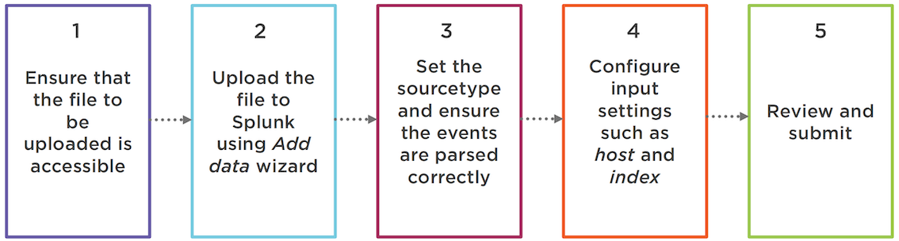
Types of Data You Can Upload
- Any kind of text files (Example: Logs, CSV files)
- Splunk automatically recognizes many standard log files such as apache web access logs and mysqld log
- You can even upload zip files. Splunk will unzip and upload
- Make sure the data in the files have valid timestamps
Parsing Options
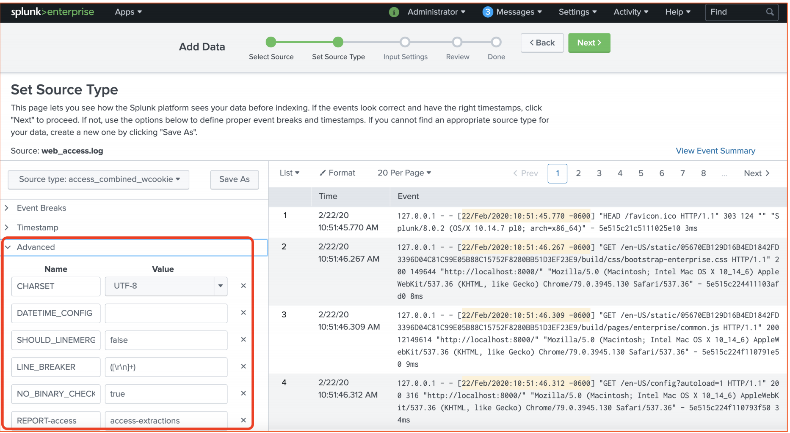
Input Options
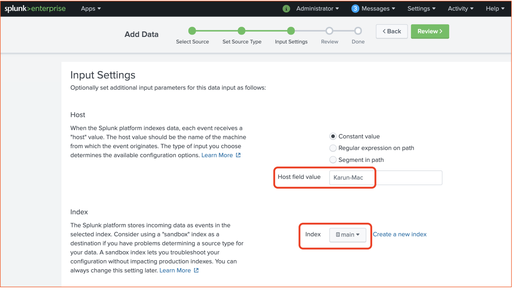
1-3 Working with Sourcetypes
Sourcetypes
- Splunk uses sourcetypes to categorize data
- Splunk comes with may pretrained sourcetypes
- Can be used while searching to filter data
- Defined in
props.confon the indexer or heavy-forwarder - Automatically assigned by Splunk, or explicitly assigned by data administrator
Using Sourcetype in Search
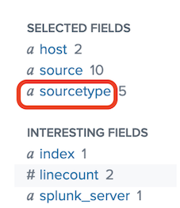
index=main sourcetvoe=vendor_sales
LINE_BREAKER and TIME_FORMAT are the two most important parameters in props.conf
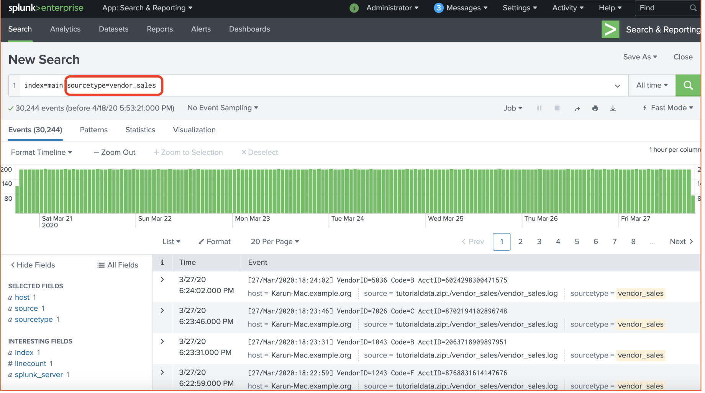
Assigning Sourcetype in SplunkWeb
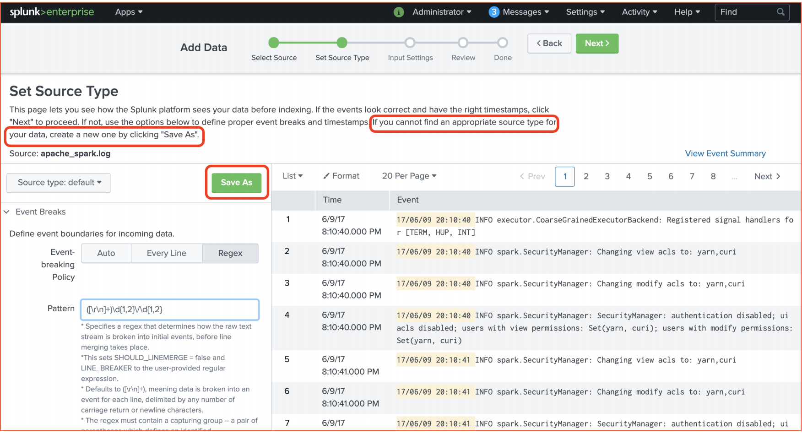
Pretrained Sourcetypes
- Splunk automatically recognizes many log files
- Splunkbase apps can add new sourcetypes
- Examples
linux_messages_syslogaccess_combined
- List of pretrained sourcetypes at https://docs.splunk.com
https://docs.splunk.com/Documentation/Splunk/8.0.3/Data/Listofpretrainedsourcetypes
Do not configure excessive number of sourcetypes
Splunk environments, do not exceed 200 sourcetypes, but for larger Splunk environments, when I say larger I mean at least 50 plus indexers
1-4 Understanding the Phases of Indexing
Three Phases of Indexing
Input phase: forwarders
- Data is read from data sources such as files and network
- Metadata such as host,source and sourcetype are app
- Most configuration in inputs.conf (some in props.conf)
- Operates on the entire data stream
Parsing phase
- Data is broken into events
- Timestamp extracted
- Most configuration in props.conf (some in transforms.conf)
- Operates on individual events
- Event level transformations
Indexing phase
- Segment events that then can be searched
- Build index
- License meter runs before the data is written to disk
- Raw data and index files are written to disk (data buckets)
Data Pipelines
Screenshot from Splunk monitoring console
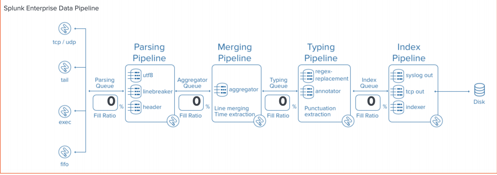
Roles of Data Pipelines
- Parsing pipeline / Character encoding / Line breaking
- Merging pipeline / Timestamp extraction / Merge multi-line events
- Indexing pipeline / Indexing
1-5 Index-time vs. Search-time Precedence
Index-time and Search-time
- Index-time： Global context, such as input/parsing configuration
- Search-time： App/User scoped, such as a user’s knowledge objects
Why Learn About Precedence?
- Splunk's behavior is primarily determined by configuration files
-
Multiple copies of the same configuration file can be in different directories
-
Configuration files are managed using a location-based priority scheme
- During runtime Splunk merges the contents of all copies of a configuration file
- Conflicts are resolved by the precedence of the configuration file
Btool is an excellent tool to retrieve the configuration file contents.
Index-time Precedence
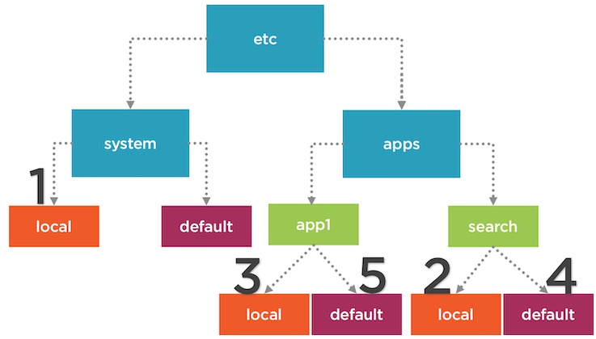
etc/system/localis given the highest priority.etc/apps/search/localfollowed byetc/apps/app1/local. (This can be any app)etc/apps/search/defaultand thenetc/apps/app1/default.
If two are more apps have conflicting settings, app directory name with highest ASCII order wins
What about search time?
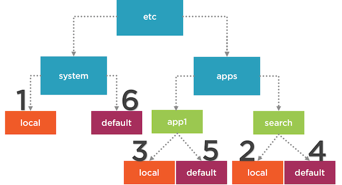
Search-time Precedence
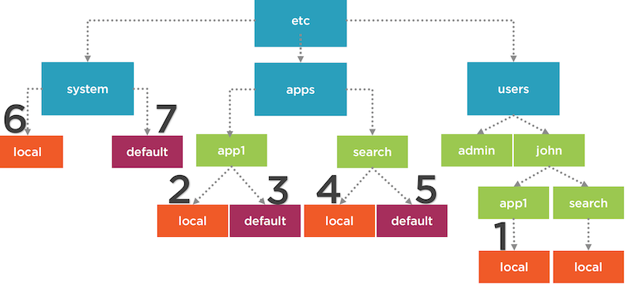
1-6 Demo
- Examine existing data inputs
- Upload data into Splunk
- Configure input options
- Create a new sourcetype while uploading data
- Review phases of indexing in monitoring console
Available data inputs in Splunk. You go to Settings, Data inputs
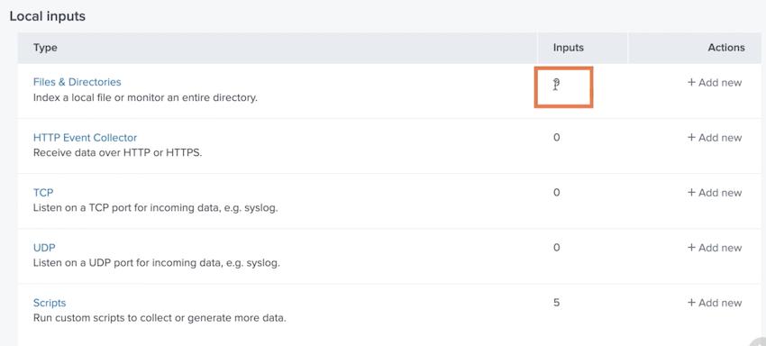
var/log/splunk directory contains the platform‑level logs
$SPLUNK_HOME/var/log/splunk
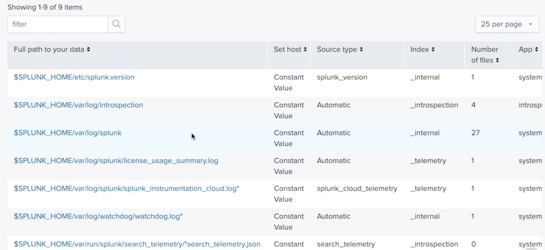
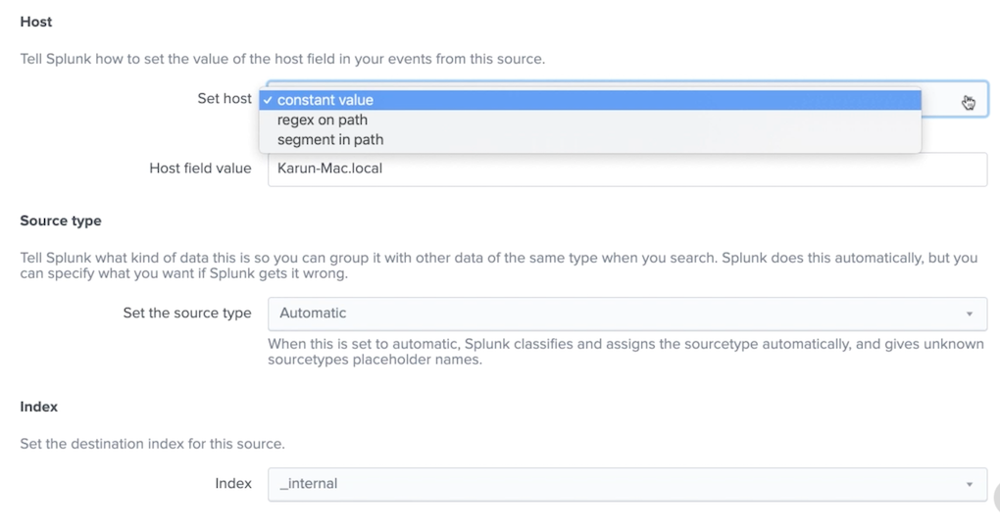
Add data
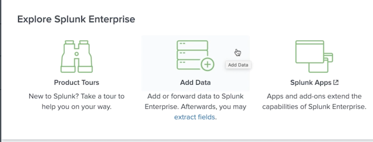
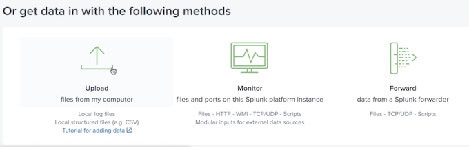
Select Source
Create index
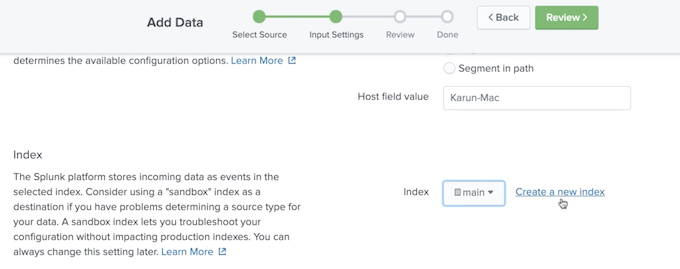
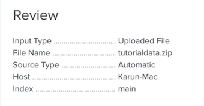
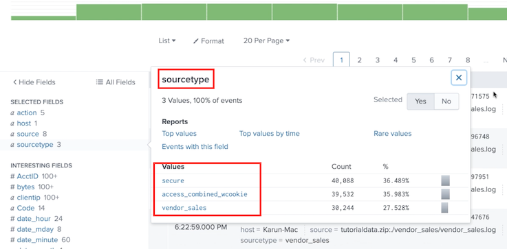
index=main sourcetype=vendor_sales
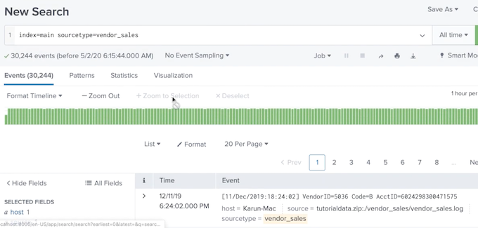
Source
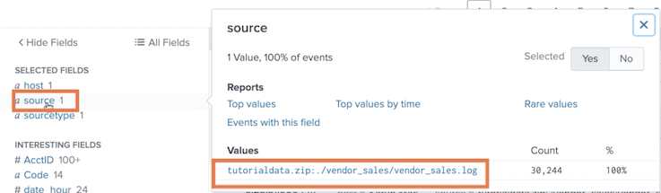
Create source type
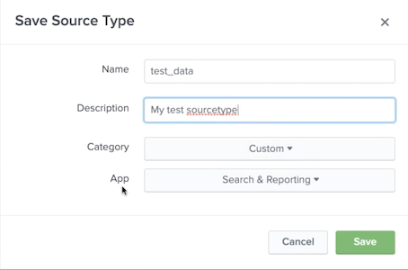
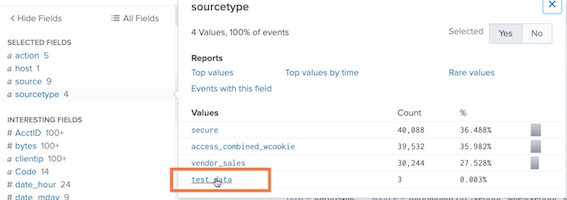
how the data ingestion pipeline works.
Click Indexing, Performance, Indexing Performance: Instance
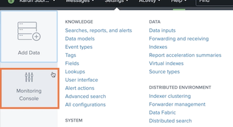
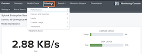
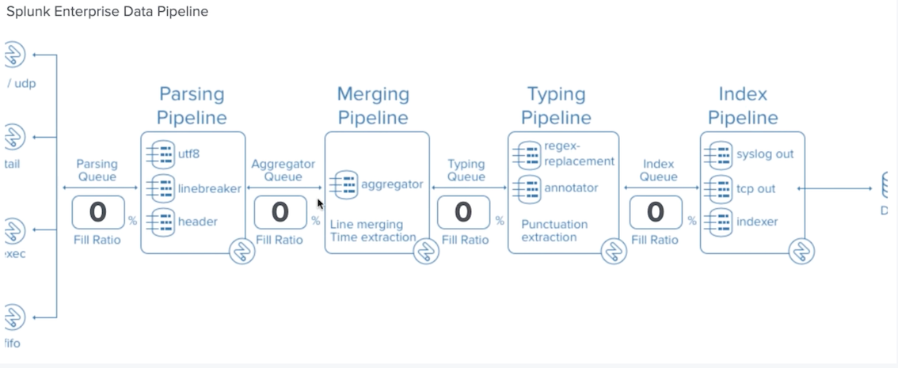
Summary
- Inputs read data from the source and stream them to Indexers
- Data flows through input, parsing and indexing phases
- Inputs.conf, props.conf and transforms.conf govern the ingestion behavior
- Event level transformations can be done during indexing
- Create custom sourcetypes if Splunk’s pre-trained sourcetypes don’t meet your needs
2 Configure Splunk Forwarders
- Determining appropriate forwarder type to use
- Installing and running universal forwarder
- Setting up forwarding
- Adding input to universal forwarder
- Implementing forwarder options
- Troubleshooting universal forwarders
Creating a Splunk universal forwarder using docker
--------------------------------------------------
$ docker pull splunk/universalforwarder
$ docker run -d --name uf1 -h uf1 -e "SPLUNK_START_ARGS=--accept-license" -e "SPLUNK_PASSWORD=splunkRocks" splunk/universalforwarder
9ec532c2ab1e0e3082bd0f84bc12a5fef9dc26b8c8e416ceeb4cb6ee713f2db7
[splunk@a1f4e45f7102 bin]$ ./splunk status
splunkd is running (PID: 730).
splunk helpers are running (PIDs: 731).
2-1 Splunk Forwarders
Splunk forwarder is an instance of Splunk that collects and forwards data to another Splunk instance, most commonly to an indexer
Data Flow
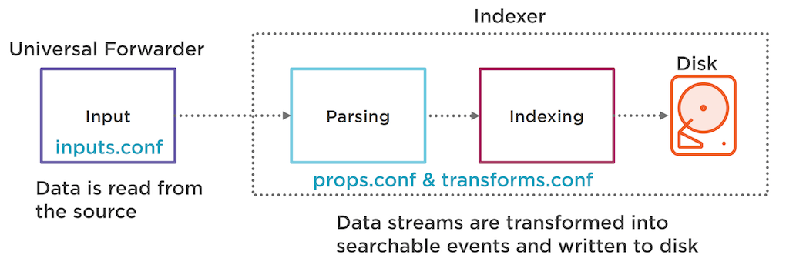
- Data is read from the source
- Data streams are transformed into searchable events and written to disk
Two Types of Forwarders
-
Universal Forwarder
- Installed on the source hosts to collect and send data to Splunk indexers or heavy forwarders
-
Heavy Forwarder
- Sits between universal forwarders and indexers. Parses data before sending to indexers
Universal Forwarder
- Stripped down version of Splunk enterprise binary
- High performance, low footprint and production-ready
- Does not parse data (Exception: Structured files such as CSV files)
When parsing is done by the forwarder side, props.conf resides on the forwarder
- By default 256 KBps output bandwidth (can be increased in
limits.conf)
On the indexer side, maxKBps is set to 0 by default, which is unlimited
- Built in, no-limit license
Heavy Forwarder
- Splunk enterprise binary with indexing turned off
- Indexing can be optionally turned on
- Parses data before forwarding to indexer or other third-party receivers
Indexer will ignore props.conf entries for a sourcetype/source/host when data flows through heavy forwarder
- Requires forwarder license
- Generally used as intermediary between universal forwarder and indexers
Universal Forwarder vs. Heavy Forwarder
-
Universal Forwarder
- Reads data from source and forwards to indexers or heavy forwarders
- Splunk universal forwarder binary
- Does not parse data except for structured data such as CSV
- Does not index data
- Built-in license
-
Heavy Forwarder
- Receives data from universal forwarders and forwards to indexers
- Splunk enterprise binary
- Parses data before sending to indexers
- Can optionally index data
- Splunk forwarder license required
Three Use Cases of Heavy Forwarders
- Parse and Route
Parse data before sending to indexers
- Firewall rule simplification
When indexers are behind firewall, a rule is required to allow just the heavy forwarder
- Hosting Splunk Add-ons Add-ons like
DBConnect and HTTP Event collectors can be hosted in heavy forwarders
A Note About Light Forwarder
- Light forwarders have been deprecated since Splunk version 6.0
- Light forwarders were configured on Splunk Enterprise instances
- Universal forwarders are the recommended replacements for light forwarders
2-2 Installing and Running Universal Forwarders Installing and Running Universal Forwarders
Supported Platforms
Linux / Windows / Mac OS / Solaris / AIX / Free BSD
You can add universal forwarder install steps in Dockerfile using entrypoint.sh
Installing Universal Forwarder in Unix
- Download the tar ball and unzip at the desired location
- Install universal forwarder in a separate file system (example: /opt/splunkforwarder)
- The command splunk is located in
SPLUNK_HOME/binthat can be - used to start/stop universal forwarder
- The default admin password is changeme,and should be changed
- Employ configuration management tools such as ansible or puppet
Installing Universal Forwarder in Windows
- You can use MSI install wizard or msiexec.exe command line
- Can be installed as a domain user (administrator privilege not required)
- Use msiexec.exe with
/quiteandAGREETOLICENSE=yesfor complete silent install - Can enable windows event logs and perfmon ingestion
- (recommended)
- Runs as a Windows service
Avoid installing more than one instance of forwarder in a host.
2-3 Setting up Forwarding
- Step 1
Setup receiving on the indexer(s). Primary configuration file is inputs.conf
- Step 2
Setup forwarding on the universal forwarders. Primary configuration file is outputs.conf
Setting up Receiving
- Setup on the indexer(s) using Splunk Web gui, command line or
inputs.conf - Must be done before forwarders can send data
- Using GUI:
Settings -> ForwardingandReceiving -> Configure receiving - Command line:
splunk enable listen <port>- Default port is 9997. You can pick any available port
Using Splunk Web to Setup Receiving
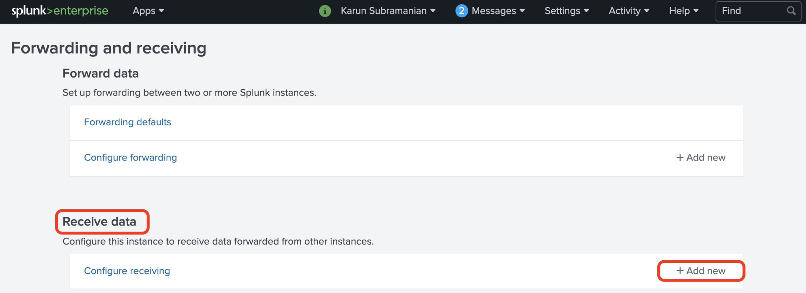
Using Command Line to Setup Receiving On the Indexer
Commands
$ cd $SPLUNK_HOME/bin
$ ./splunk enable listen 9997
Listening for Splunk data on TCP
port 9997.
$ netstat –an | grep 9997
tcp4 0 0 *.9997
*.* LISTEN
Resulting inputs.conf
[splunktcp://9997]
connection_host = dns
# The connection_host parameter is used if the forwarder does not
set the hostname. The default is dns where receiver will do a reverse dns lookup to find the host name of the forwarder.
Setting up Forwarding
- On the forwarders, use command line or
outputs.confto set up forwarding - Command line:
./splunk add forward-server <Receiver ip host:port>./splunk add forward-server 192.168.0.11:9997
- You can edit
outputs.confdirectly to add forwarding
Using Command Line to Setup Forwarding (On the Forwarder)
- Commands
$ cd $SPLUNK_HOME/bin
$ ./splunk add forward-server 192.168.0.11:9997
Added forwarding to: 192.168.0.11:9997.
$ ./splunk list forward-server
Active forwards: 192.168.0.11:9997
Configured but inactive forwards:None
- Resulting outputs.conf
[tcpout]
defaultGroup = default-autolbgroup
[tcpout:default-autolb-group]
server = 192.168.0.11:9997
[tcpoutserver://192.168.0.11:9997]
2-4 Adding Inputs to the Universal Forwarder
Four Ways to Add Inputs
- Using deployment server to distribute inputs.conf
- Using Splunk command line
- Editing inputs.conf manually
- Using Splunk add-ons
Using Command Line to Add Input （On the Forwarder）
Commands
$ SPLUNK_HOME/bin/splunk add monitor /.../Logs/fsck_hfs.log
Added monitor of '/Users/karun/Library/Logs/fsck_hfs.log’
# inputs.conf
[monitor:///Users/karun/Library/Logs/fsck_hfs.log]
disabled = false
inputs.conf has been created in 'search' app at$PLUNK_HOME/etc/apps/search/local/inputs.conf.
Verifying with btool
./splunk btool inputs list monitor:///Users/karun/Library/Logs/fsck_hfs.log
[monitor:///Users/karun/Library/Logs/fsck_hfs.log]
_rcvbuf = 1572864
disabled = false
host = Mac.local
index = default
[monitor:///Users/karun/Library/Logs/fsck_hfs.log]
host = Mac.local
index = default
sourcetype = mac:system:fsck_log
_TCP_ROUTING = default-autolbgroup
blacklist = *trace.log
- File or directory to be monitored. For directory inputs, all files in all subdirectories included (recursive)
- Use
recursive = falseininputs.confto disable recursion.
- Use
- Host name to use for events from this input
- Index name. The index must exist
- Sourcetype to use for events from this input
- Tcpout group to send data to, as specified in
outputs.conf - Files to exclude from monitoring
Location of inputs.conf
- Splunk uses a framework of layered configuration files.
- Precedence of configuration is determined by the directory location.
- In practice,
inputs.confis bundled in an app and distributed using deployment server.
Configuration file precedence under $SPLUNK_HOME
etc/system/localetc/apps/search/localetc/apps/<appname>/localetc/apps/search/defaultetc/apps/<appname>/defaultetc/system/default
./splunk btool inputs list monitor: ///Users/karun/Library/Logs/fsck_hfs.log --debug
2-5 Additional Forwarder Configuration Options
Fine Tuning Forwarders
- Forward data selectively to multiple indexers
- Load balance forwarding across indexers
- Configure compression
- Configure SSL
- Buffering (Queueing)
- Indexer acknowledgement
Forward Data Selectively to Multiple Indexers
- Define two tcpout destinations in outputs.conf
- Use
_TCP_ROUTINGin inputs.conf to selectively send data
outputs.conf
[tcpout:security]
server = sec_indexer:9997
[tcpout:sre]
server = sre_indexer:9997
inputs.conf
[monitor:///logs/audit.log]
_TCP_ROUTING = security
[monitor:///logs/error.log]
_TCP_ROUTING = sre
Automatic Load Balancing
- Specify a list of indexers in the server list in
outputs.conf - Every 30 seconds, forwarder will randomly select an available indexer from the list
- Frequency can be updated using autoLBFrequency setting (not recommended)
outputs.conf
[tcpout:indexers]
server = idx1:9997,idx2:9997,idx3:9997
Automatic Load balancing is required for distributed search to be effective
autoLBFrequency is set in outputs.conf
Enabling Compression
- Enable compression on both indexer and forwarder
- Reduces network traffic, but slightly increases CPU usage
outputs.conf on the forwarder
[tcpout:indexer]
server = my_indexer:9997
compressed = true
nputs.conf on the my_indexer
[splunktcp:9997]
compressed = true
Configuring SSL
- Enabling SSL automatically enables compression
- Can increase CPU usage
outputs.conf on the forwarder
[tcpout:indexer]
server = my_indexer:9997
clientCert = clientcert.pem
sslRootCAPath = cacert.pem
sslPassword = <password>
inputs.conf on the my_indexer
Solunk's default SSL certificates password "password'
[splunktcp-ssl:9997]
serverCert = mycert.pem
sslPassword = <password>
rootCA = cacert.pem
Splunk's default SSL certificates password is "Password"
Configuring Queueing
- Configure maxQueueSize in
outputs.confto enable queueing - Default is 500kb when useACK is false. 7MB when useACK is true
- When load balancing is enabled, queueing occurs only when all indexers are not available
Configuring Indexer Acknowledgement
- Ensures data is received by indexers
- Protects against data loss
- Forwarder resends data not acknowledged by indexer
- A wait queue is created with 3X size of maxQueueSize
- Enabaled by using
useACK = trueinoutputs.conf
2-6 Demo
Download Splunk Universal Forwarder 9.0.4
https://www.splunk.com/en_us/download/universal-
ls splunkforwarder-8.0.4-767223ac207f-darwin-64.tgz
splunkforwarder-8.0.4-767223ac207f-darwin-64.tgz
cd /opt
/opt $ tar xvzf ~/Downloads/splunkforwarder-8.0.4-767223ac207f-darwin-64.tgz
/opt/splunkforwarder $ cd bin
/opt/splunkforwarder/bin $ ./splunk start --accept-license
Please enter an administrator username: admin
Password must contain at least:
* 8 total printable ASCII character(s).
Please enter a new password:
/opt/splunkforwarder/bin $ ./splunk status
splunkd is running (PID: 16282).
splunk helpers are running (PIDs: 16285)
- Configuire Indexer
~/platform/splunk/bin
./splunk display listen
Receiving is disabled
Add Forward and Receiving Data via commmand line
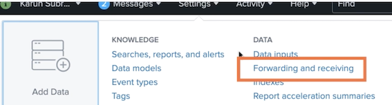
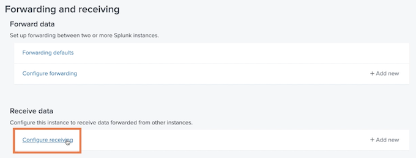
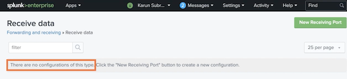
~/platform/splunk/bin $ ./splunk enable listen 9997
Listening for Splunk data on TCP port 9997.
~/platform/splunk/bin $ netstat -an | grep 9997
tcp4 0. 0. *.9997. *. * LISTEN
~/platform/splunk/bin $ ./splunk btool inputs list
...
[splunktcp://99977
revbuf = 1572864
connection_host = ip
host = Mac.local
index = default
...
./splunk btool inputs list splunktcp://9997 --debug
/Users/karun/platform/splunk/etc/apps/search/local/inputs.conf [splunktcp://9997]
/Users/karun/platform/splunk/etc/system/default/inputs.conf revbuf = 1572864
/Users/karun/platform/splunk/etc/apps/search/local/inputs.conf connection_host = ip
/Users/karun/platform/splunk/etc/system/local/inputs.conf host = Mac.local
/Users/karun/platform/splunk/etc/system/default/inputs.conf index= default
- Universal Forwarder
docker pull splunk/universalforwarder
docker exec -u splunk -it uf1 /bin/bash
[splunk@uf1 splunkforwarder]$ cd bin
[splunk@uf1 bin]$ ./splunk list forward-server
[splunk@uf1 bin]$ ./splunk list forward-server
Active forwards:
None
Configured but inactive forwards:
None
[splunk@uf1 bin]$ ./splunk add forward-server 192.168.0.11:9997
Added forwarding to: 192.168.0.11:9997.
[splunk@uf1 bin]$ ./splunk btool outputs list
...
[tcpout-server://192.168.0.11:9997]
[tpout: default-autolb-group]
server = 192.168.0.11:9997
...
index=_internal host=uf1
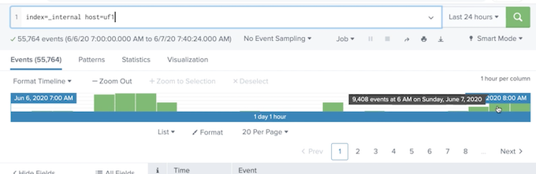
Source type
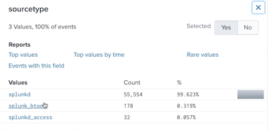
$ docker exec -u splunk -it uf1 /bin/bash
[splunk@uf1 splunkforwarder]$ cd bin
[splunk@uf1 bin]$ ./splunk add monitor /opt/container_artifact/ansible.log
Your session is invalid.
Splunk username: admin
Added monitor of '*/opt/container_artifact/ansible.log'
Do not use index=* in your production environment as it might consume excessive resources
index=* host=uf1 source=*ansible*
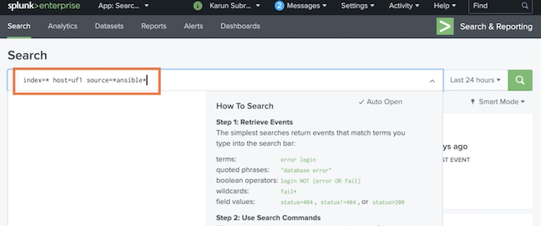
[splunk@uf1 splunkforwarder]$ cd bin
[splunk@uf1 bin]$ ./splunk btool inputs
...
[monitor:///opt/container_artifact/ansible.log]
f_revbuf = 1572864
disabled = false
host = $decideOnStartup
index = default
...
[splunk@uf1 bin]$ ./splunk btool inputs list monitor: ///opt/container_artifact/ansible.log --debug
/opt/splunkforwarder/etc/apps/search/local/inputs.conf [monitor:///opt/container_artifact/ansible.log]
/opt/splunkforwarder/etc/system/default/inputs.conf _rcvbuf = 1572864
/opt/splunkforwarder/etc/apps/search/local/inputs.conf disabled = false
/opt/splunkforwarder/etc/system/default/inputs.conf host = $decideOnStartup
/opt/splunkforwarder/etc/system/default/inputs.conf i
ndex = default
[splunk@uf1 bin]$ vi /opt/splunkforwarder/etc/apps/search/local/inputs.conf
[monitor:///opt/container_artifact/ansible.log]
disabled = false
# Adding inputs for watchdog.log
[monitor:///opt/container_artifact/ansible.log]
disabled = false
index = main
sourcetype = splunk:watchdog_log
[splunk@uf1 bin]$ ./splunk restart
index=* source=*watchdog.log*
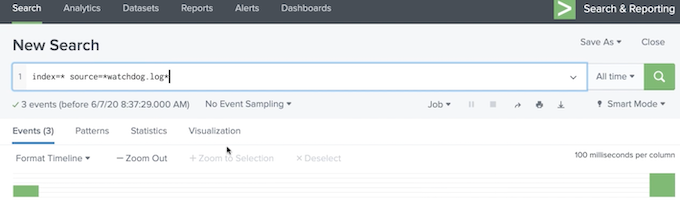
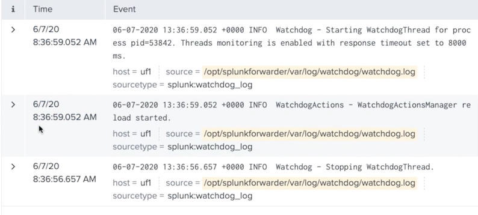
Update $PLUNK HOME/etc/system/local/outputs.conf
[splunk@uf1 splunkforwarder]$ cd etc/system/local
[indexAndForward]
index = false
[tcpout]
defaultGroup = default-autolb-group
[tcpout:default-autolb-group]
server = 192.168.0.11:9997
useACK = true
[tcpout server: //192.168.0.11:9997]
index=_internal host=uf1 ack
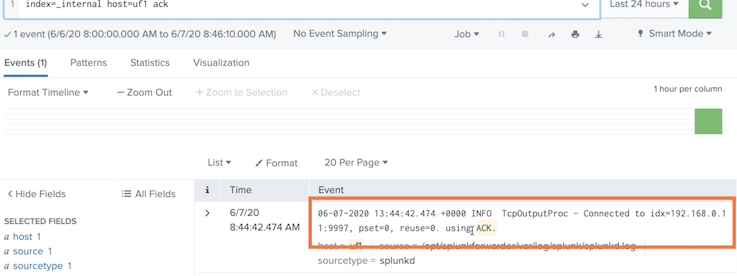
[splunk@uf1 splunkforwarder]$ cd bin
[splunk@uf1 bin]$ ./splunk status
splunkd is running (PID: 54057).
splunk helpers are running (PIDs: 54058)
[splunk@uf1 bin]$ ps -ef | grep splunk
splunk 54057 0 0 13:44 ? 00:00:01 splunkd -p 8089 restart
/splunk btool outputs list
Summary
-
Most common way to send data to Splunk is using universal forwarders
-
Use heavy forwarders as intermediary between forwarders and indexers
-
Heavy forwarders parse and optionally index data
-
Major configuration files are inputs.conf and outputs.conf
-
Forwarder configuration options include SSL, queueing, load balancing and compression
3 Manage Splunk Forwarders
- Use of forwarder management
- Describe Splunk deployment server
- Use deployment apps
- Configure deployment clients
- Configure client groups using
- serverclasses
- Monitor forwarders
3-1 Use of Forwarder Management
Why Forwarder Management?
- Centralized
- Handle thousands of forwarders from one system
- Distribute configuration files
- Configuration files can be packaged as apps and distributed from a central place
- Monitor forwarders
- Monitor the availability of forwarders and restart them remotely
Forwarder Management in Practice
- For indexer infrastructure changes, forwarder's
outputs.confneeds to be updated - For changes in data sources,
inputs.confneeds to be updated - If a forwarder is down, we need to be alerted in a reasonable time
- We can take advantage of Splunk's configuration files layering to create custom apps and distribute
- Installing forwarders is generally done by configuration management tools such as ansible or puppet
Forwarder management is implemented using Splunk deployment server, a tool to manage Splunk configuration files
3-2 Splunk Deployment Server
Splunk Deployment Server
- A tool to manage Splunk configuration files
- Splunk Enterprise License is required
- Can be accessed via Splunk Web
- Keep a dedicated server for deployment server
- Cannot be used for installing/upgrading forwarders
Deployment Server Architecture
Deployment Server (1 - many) Hosts with universal forwarders
Deployment Server Architecture
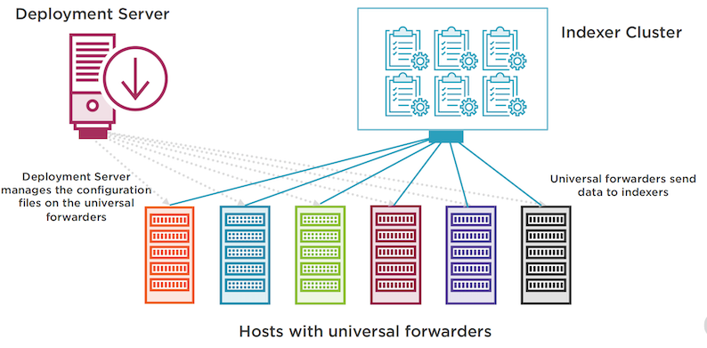
3-3 Deployment App
- Mechanism to distribute configuration files to forwarders
- App must adhere to the standard Splunk app directory structure
- It can contain configuration files, scripts, views and other resources
- On the deployment server, apps are stored in
$SPLUNK_HOME/etc/deployment-apps - On the forwarders, apps will be deployed in
$SPLUNK_HOME/etc/apps
Sample App
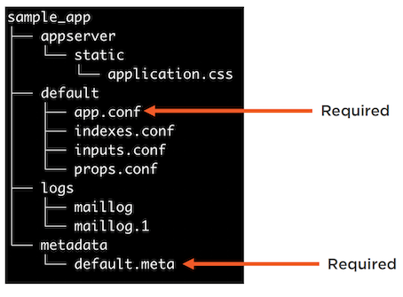
Setting up Deployment Server
- Create at least one app in
$SPLUNK_HOME/deploymentapps/ - Forwarder management UI is not activated until a deployment app is found
Forwarder Management
The forwarder management UI distributes deployment apps to Splunk clients.
No clients or apps are currently available on this deployment server.
Setting up Deployment Server
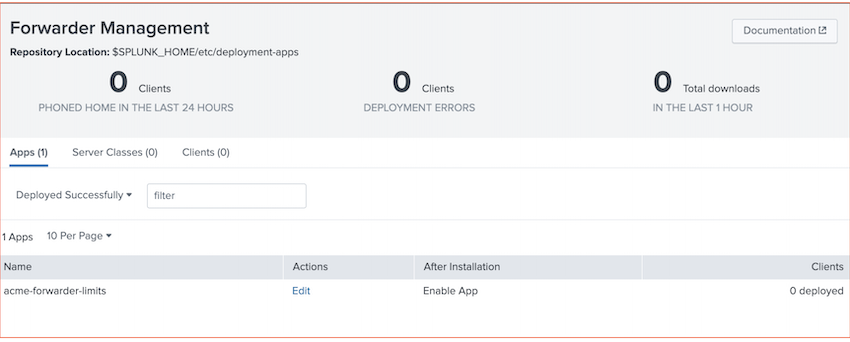
3-4 Deployment Clients
Setting up Deployment Clients
- Forwarders must be setup as deployment clients
- Primary configuration file is
deploymentclient.conf
Command
$./splunk set deploy-poll 192.168.0.11:8089
Configuration updated.
deploymentclient.conf
[targetbroker:deploymentServer]
targetUri = 192.168.0.11:8089
Forwarder Management
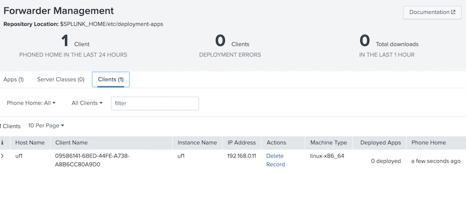
Deploymentclient.conf Customization
Configuration
targetUri = 192.168.0.11:8089: Must be under [targetbroker:deploymentServer] stanza.- Specifies deployment Server
clientName = myWebServer: A custom name that can be used by deploymentServer in serverclassphoneHomeIntervalInSecs = 120: How frequently the deployment server is checked for new content (default=60)
3-5 Setting up Serverclasses
Serverclass
- Mechanism to group hosts (deployment clients) and designate the deployment apps to be deployed
- You can group hosts based on
dns/ip/clientname - You can also group hosts based on the machine type
- Serverclasses are defined in serverclass.conf
- Wild cards allowed when specifying the host names
Creating a Serverclass
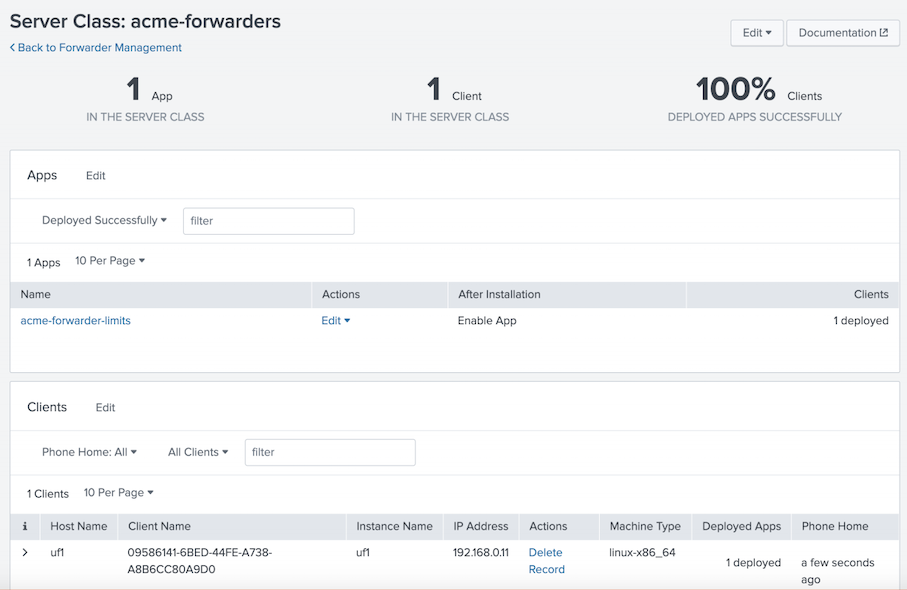
3-6 Monitoring Forwarders
Monitoring Forwarders
- Forwarder monitoring can be enabled from monitoring console (recommended)
- Periodically (15 minutes by default), using internal logs from the forwarders, a forwarder asset table (lookup) is built
The lookup table name is
dmc_forwarder_assets
-
We can monitor
-
Forwarder state (active/missing)
- Data throughput (kb/s)
- Events throughput (events/s)
Monitoring Console
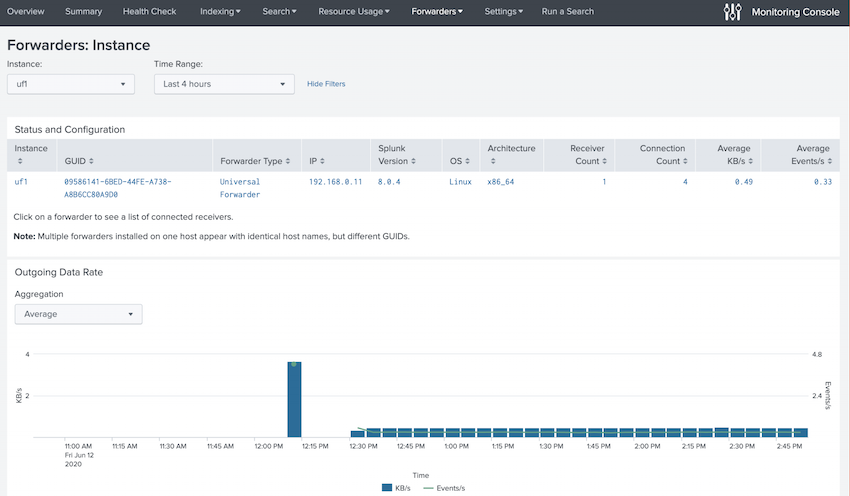
Rebuilding Forwarder Assets
- Monitoring console will mark a forwarder as missing if it has not reported in the past 15 minutes.
- To avoid decommissioned servers from being reported, you can rebuild the forwarder assets table
- This is a resource intensive process, so run it during off-peak hours
- Monitoring console > Settings > Forwarder Monitoring Setup > Rebuild forwarder assets
Demo
- Configure deployment server
- Create a deployment app
- Configure deployment client
- Create a serverclass
- Add apps
- Add clients
- Deploy an app
- Monitor forwarders using monitoring console
Indexer
Create a deployment app
cd etc/deployment-apps
/etc/deployment-apps > cd /tmp
cd /tmp > tree acme-forwarder-limits
acme-forwarder-limits
|
| _ default
\_app. conf
\_local
\_limits.conf
\_metadata
\_default.meta
3 directories, 3 files
$ cat acme-forwarder-limits/default/app.conf
[default]
[install]
state = enabled
$ cat acme-forwarder-limits/metadata/default.meta
[]
access = read : [ * ], write:[ power, admin ]
$ cat acme-forwarder-limits/local/limits.conf
[thruput]
maxKBps = 2048
On the indexers, maxKBps is set to 0 (unlimited) by default
/etc/deployment-apps > cp -r /tmp/acme-forwarder-limits .
/etc/deployment-apps > ls
README
acme-forwarder-limits
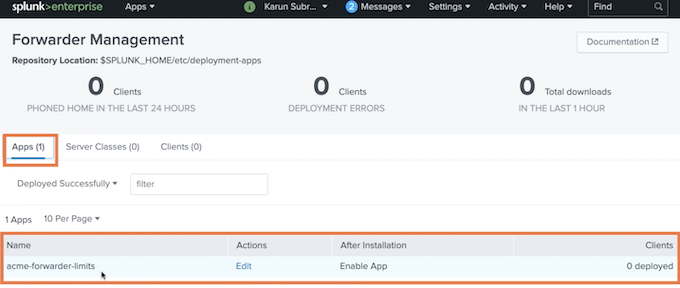
Configure deployment client
docker exec -u splunk -it uf1 /bin/bash
[splunk@uf1 splunkforwarder]$ cd bin
[splunk@uf1 bin]$ pwd
/opt/splunkforwarder/bin
[splunk@uf1 bin]$ ./splunk set deploy-poll 192.168.0.11:8089
Your session is invalid. Please login.
Splunk username: admin
[splunk@uf1 local]$ cat deploymentclient.conf
[target-broker: deploymentServer]
targetUri=192.168.0.11:8089
deploymentclient.conf is created in
$SPLUNK_HOME/etc/system/local
Create a serverclass
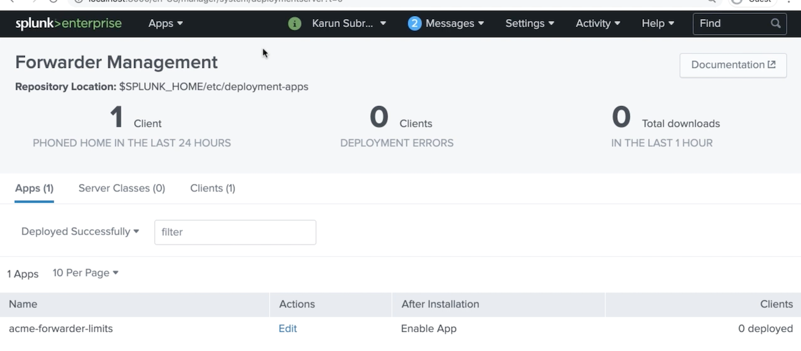
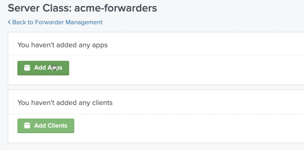
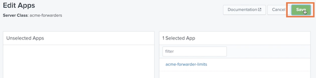
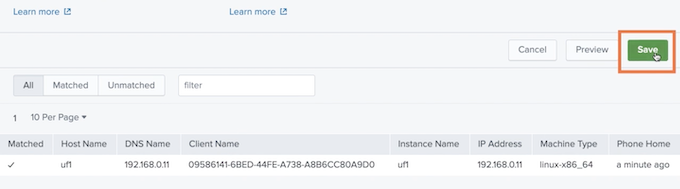
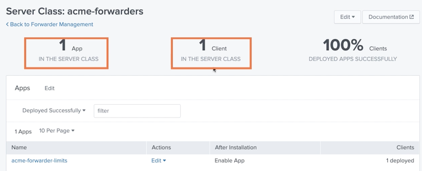
$ cd ../../apps
$ ll
acme-forwarder-limits
Monitor forwarders using monitoring console
Summary
- Deployment server manages the distribution of configuration files
- Forwarders are deployment clients (deploymentclient.conf)
- Configuration files are packaged as deployment apps
- Serverclass groups forwarders and assigns apps to be deployed (serverclass.conf)
- Monitoring console can monitor the availability and throughput of forwarders
--
- Data goes through input, parsing and indexing phases
- Master inputs.conf, outputs.conf, props.conf, and serverclass.conf
- Heavy forwarders parse data and can be used to host add-ons
- Use deployment server to manage forwarders